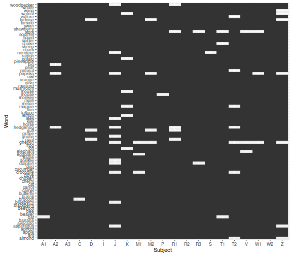
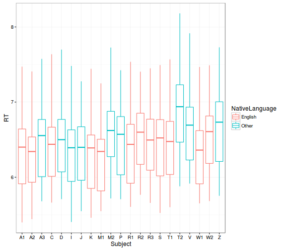
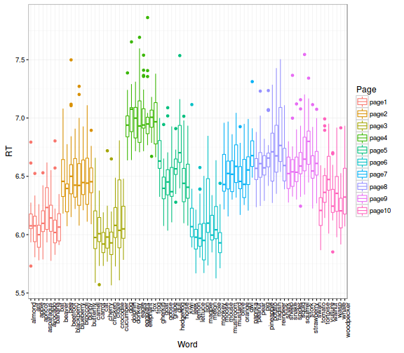
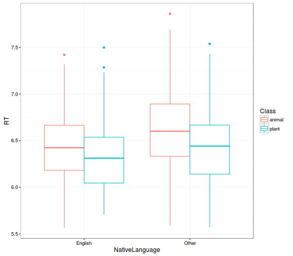
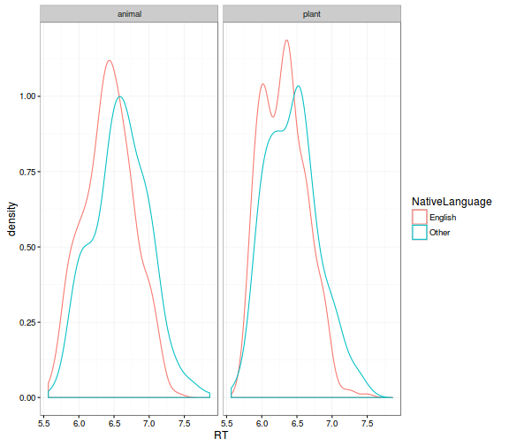
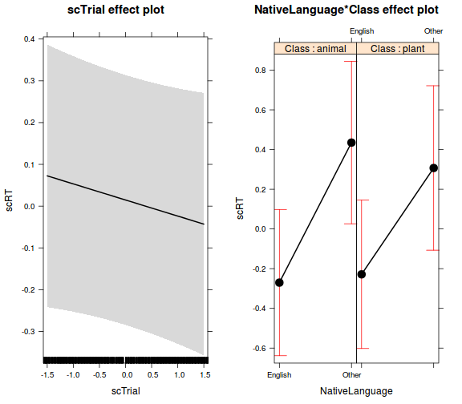

freq <- with(lexdec, table(Subject, Word))
# a freq mátrix túl nagy, a példához elég egy kis részlete
freq[1:5, 1:5]
## Word
## Subject almond ant apple apricot asparagus
## A1 1 1 1 1 1
## A2 1 1 1 1 1
## A3 1 1 1 1 1
## C 1 1 1 1 1
## D 1 1 1 1 1
# tökéletesen keresztezett, ismétlés nélküli dizájn
table(freq)
## freq
## 1
## 1659
with(lexdec, table(Word, Page))
## Page
## Word page1 page2 page3 page4 page5 page6 page7 page8 page9 page10
## almond 21 0 0 0 0 0 0 0 0 0
## ant 21 0 0 0 0 0 0 0 0 0
## apple 21 0 0 0 0 0 0 0 0 0
## apricot 21 0 0 0 0 0 0 0 0 0
## asparagus 21 0 0 0 0 0 0 0 0 0
## avocado 21 0 0 0 0 0 0 0 0 0
## banana 21 0 0 0 0 0 0 0 0 0
## bat 21 0 0 0 0 0 0 0 0 0
## beaver 0 21 0 0 0 0 0 0 0 0
## bee 0 21 0 0 0 0 0 0 0 0
## beetroot 0 21 0 0 0 0 0 0 0 0
## blackberry 0 21 0 0 0 0 0 0 0 0
## blueberry 0 21 0 0 0 0 0 0 0 0
## broccoli 0 21 0 0 0 0 0 0 0 0
## bunny 0 21 0 0 0 0 0 0 0 0
## butterfly 0 21 0 0 0 0 0 0 0 0
## camel 0 0 21 0 0 0 0 0 0 0
## carrot 0 0 21 0 0 0 0 0 0 0
## cat 0 0 21 0 0 0 0 0 0 0
## cherry 0 0 21 0 0 0 0 0 0 0
## chicken 0 0 21 0 0 0 0 0 0 0
## clove 0 0 21 0 0 0 0 0 0 0
## crocodile 0 0 21 0 0 0 0 0 0 0
## cucumber 0 0 21 0 0 0 0 0 0 0
## dog 0 0 0 21 0 0 0 0 0 0
## dolphin 0 0 0 21 0 0 0 0 0 0
## donkey 0 0 0 21 0 0 0 0 0 0
## eagle 0 0 0 21 0 0 0 0 0 0
## eggplant 0 0 0 21 0 0 0 0 0 0
## elephant 0 0 0 21 0 0 0 0 0 0
## fox 0 0 0 21 0 0 0 0 0 0
## frog 0 0 0 21 0 0 0 0 0 0
## gherkin 0 0 0 0 21 0 0 0 0 0
## goat 0 0 0 0 21 0 0 0 0 0
## goose 0 0 0 0 21 0 0 0 0 0
## grape 0 0 0 0 21 0 0 0 0 0
## gull 0 0 0 0 21 0 0 0 0 0
## hedgehog 0 0 0 0 21 0 0 0 0 0
## horse 0 0 0 0 21 0 0 0 0 0
## kiwi 0 0 0 0 21 0 0 0 0 0
## leek 0 0 0 0 0 21 0 0 0 0
## lemon 0 0 0 0 0 21 0 0 0 0
## lettuce 0 0 0 0 0 21 0 0 0 0
## lion 0 0 0 0 0 21 0 0 0 0
## magpie 0 0 0 0 0 21 0 0 0 0
## melon 0 0 0 0 0 21 0 0 0 0
## mole 0 0 0 0 0 21 0 0 0 0
## monkey 0 0 0 0 0 21 0 0 0 0
## moose 0 0 0 0 0 0 21 0 0 0
## mouse 0 0 0 0 0 0 21 0 0 0
## mushroom 0 0 0 0 0 0 21 0 0 0
## mustard 0 0 0 0 0 0 21 0 0 0
## olive 0 0 0 0 0 0 21 0 0 0
## orange 0 0 0 0 0 0 21 0 0 0
## owl 0 0 0 0 0 0 21 0 0 0
## paprika 0 0 0 0 0 0 21 0 0 0
## peanut 0 0 0 0 0 0 0 21 0 0
## pear 0 0 0 0 0 0 0 21 0 0
## pig 0 0 0 0 0 0 0 21 0 0
## pineapple 0 0 0 0 0 0 0 21 0 0
## potato 0 0 0 0 0 0 0 21 0 0
## radish 0 0 0 0 0 0 0 21 0 0
## reindeer 0 0 0 0 0 0 0 21 0 0
## shark 0 0 0 0 0 0 0 21 0 0
## sheep 0 0 0 0 0 0 0 0 21 0
## snake 0 0 0 0 0 0 0 0 21 0
## spider 0 0 0 0 0 0 0 0 21 0
## squid 0 0 0 0 0 0 0 0 21 0
## squirrel 0 0 0 0 0 0 0 0 21 0
## stork 0 0 0 0 0 0 0 0 21 0
## strawberry 0 0 0 0 0 0 0 0 21 0
## swan 0 0 0 0 0 0 0 0 21 0
## tomato 0 0 0 0 0 0 0 0 0 21
## tortoise 0 0 0 0 0 0 0 0 0 21
## vulture 0 0 0 0 0 0 0 0 0 21
## walnut 0 0 0 0 0 0 0 0 0 21
## wasp 0 0 0 0 0 0 0 0 0 21
## whale 0 0 0 0 0 0 0 0 0 21
## woodpecker 0 0 0 0 0 0 0 0 0 21
Fontos, hogy sose kódoljunk úgy változókat, hogy ne legyen egyértelmű, hogy keresztezett vagy beágyazott hatásokról van-e szó. Magyarán ha hierarchikus változóink vannak (pl. személy << iskola, vagy jelen példában szó << szótári oldal), akkor az alsóbb szinten is alkalmazzunk egyedi azonosítókat. Jelen példánál maradva, ahol minden szótári oldalról 8-8 szó szerepel, hiba lenne a szavakat "word1", "word2", "word3", ..., "word8"-ként kódolni, hiszen az egyik oldal "word1" szavának semmi köze nincsen a másik oldal "word1" szavához.
# tegyük fel, hogy a Word változót word1, word2, ... word8-ként kódoltuk
# a Page minden szintjén
lexdec$WordWrong <- paste0(
"word",
as.integer(lexdec$Word) - 8*(as.integer(lexdec$Page)-1))
# innentől a keresztgyakorisági tábla nem mutatja meg, hogy
# a 'word' faktor a 'page' faktorunkba van ágyazva
with(lexdec, table(WordWrong, Page))
## Page
## WordWrong page1 page2 page3 page4 page5 page6 page7 page8 page9 page10
## word1 21 21 21 21 21 21 21 21 21 21
## word2 21 21 21 21 21 21 21 21 21 21
## word3 21 21 21 21 21 21 21 21 21 21
## word4 21 21 21 21 21 21 21 21 21 21
## word5 21 21 21 21 21 21 21 21 21 21
## word6 21 21 21 21 21 21 21 21 21 21
## word7 21 21 21 21 21 21 21 21 21 21
## word8 21 21 21 21 21 21 21 21 21 0
lexdec_corr <- subset(lexdec, Correct == "correct",
select = c(Subject, RT, Trial, NativeLanguage,
Word, Class, Page))
# általános leíró statisztikák
summary(lexdec_corr)
## Subject RT Trial NativeLanguage
## A3 : 79 Min. :5.399 Min. : 23.0 English:920
## I : 79 1st Qu.:6.043 1st Qu.: 64.0 Other :674
## R2 : 79 Median :6.482 Median :106.0
## W2 : 79 Mean :6.465 Mean :104.9
## A1 : 78 3rd Qu.:6.781 3rd Qu.:146.0
## C : 78 Max. :8.180 Max. :185.0
## (Other):1122
## Word Class Page
## ant : 21 animal:884 page2 :166
## apple : 21 plant :710 page3 :165
## apricot: 21 page6 :164
## avocado: 21 page8 :163
## banana : 21 page1 :162
## beaver : 21 page4 :162
## (Other):1468 (Other):612
# példa: válaszidők statisztikái szavanként, ferdeségi mutatóval
with(lexdec_corr, psych::describeBy(RT, Subject, skew = TRUE))
## group: A1
## vars n mean sd median trimmed mad min max range skew kurtosis se
## 1 1 78 6.37 0.48 6.4 6.36 0.42 5.4 7.47 2.07 0.14 -0.67 0.05
## --------------------------------------------------------
## group: A2
## vars n mean sd median trimmed mad min max range skew kurtosis se
## 1 1 76 6.3 0.47 6.34 6.27 0.49 5.44 7.41 1.97 0.4 -0.55 0.05
## --------------------------------------------------------
## group: A3
## vars n mean sd median trimmed mad min max range skew kurtosis se
## 1 1 79 6.48 0.48 6.55 6.46 0.43 5.68 7.58 1.9 0.09 -0.83 0.05
## --------------------------------------------------------
## group: C
## vars n mean sd median trimmed mad min max range skew kurtosis se
## 1 1 78 6.41 0.48 6.44 6.38 0.5 5.66 7.64 1.97 0.38 -0.47 0.05
## --------------------------------------------------------
## group: D
## vars n mean sd median trimmed mad min max range skew kurtosis se
## 1 1 76 6.49 0.5 6.5 6.47 0.53 5.71 7.7 1.99 0.34 -0.5 0.06
## --------------------------------------------------------
## group: I
## vars n mean sd median trimmed mad min max range skew kurtosis se
## 1 1 79 6.34 0.49 6.39 6.32 0.43 5.4 7.48 2.08 0.16 -0.6 0.06
## --------------------------------------------------------
## group: J
## vars n mean sd median trimmed mad min max range skew kurtosis se
## 1 1 67 6.35 0.46 6.4 6.34 0.49 5.55 7.28 1.73 0.08 -0.98 0.06
## --------------------------------------------------------
## group: K
## vars n mean sd median trimmed mad min max range skew kurtosis se
## 1 1 73 6.28 0.46 6.39 6.26 0.45 5.46 7.44 1.98 0.17 -0.67 0.05
## --------------------------------------------------------
## group: M1
## vars n mean sd median trimmed mad min max range skew kurtosis se
## 1 1 76 6.25 0.44 6.34 6.24 0.37 5.55 7.25 1.7 0.07 -0.77 0.05
## --------------------------------------------------------
## group: M2
## vars n mean sd median trimmed mad min max range skew kurtosis se
## 1 1 75 6.6 0.52 6.62 6.58 0.41 5.72 7.73 2.01 0.16 -0.55 0.06
## --------------------------------------------------------
## group: P
## vars n mean sd median trimmed mad min max range skew kurtosis se
## 1 1 78 6.5 0.49 6.57 6.49 0.52 5.71 7.42 1.72 0.04 -0.99 0.06
## --------------------------------------------------------
## group: R1
## vars n mean sd median trimmed mad min max range skew kurtosis se
## 1 1 74 6.39 0.49 6.44 6.36 0.5 5.61 7.54 1.93 0.32 -0.74 0.06
## --------------------------------------------------------
## group: R2
## vars n mean sd median trimmed mad min max range skew kurtosis se
## 1 1 79 6.55 0.44 6.6 6.55 0.46 5.77 7.4 1.64 -0.03 -0.94 0.05
## --------------------------------------------------------
## group: R3
## vars n mean sd median trimmed mad min max range skew kurtosis se
## 1 1 77 6.46 0.44 6.49 6.45 0.48 5.66 7.45 1.79 0.08 -0.8 0.05
## --------------------------------------------------------
## group: S
## vars n mean sd median trimmed mad min max range skew kurtosis se
## 1 1 78 6.45 0.49 6.52 6.44 0.51 5.52 7.49 1.97 0.03 -0.81 0.05
## --------------------------------------------------------
## group: T1
## vars n mean sd median trimmed mad min max range skew kurtosis se
## 1 1 76 6.45 0.48 6.48 6.43 0.47 5.6 7.57 1.97 0.21 -0.64 0.06
## --------------------------------------------------------
## group: T2
## vars n mean sd median trimmed mad min max range skew kurtosis se
## 1 1 72 6.89 0.53 6.94 6.88 0.52 5.88 8.18 2.3 0.06 -0.54 0.06
## --------------------------------------------------------
## group: V
## vars n mean sd median trimmed mad min max range skew kurtosis se
## 1 1 76 6.64 0.47 6.69 6.62 0.56 5.92 7.92 2 0.24 -0.69 0.05
## --------------------------------------------------------
## group: W1
## vars n mean sd median trimmed mad min max range skew kurtosis se
## 1 1 76 6.33 0.45 6.36 6.31 0.51 5.65 7.47 1.82 0.35 -0.74 0.05
## --------------------------------------------------------
## group: W2
## vars n mean sd median trimmed mad min max range skew kurtosis se
## 1 1 79 6.54 0.48 6.61 6.53 0.51 5.68 7.49 1.81 0.09 -0.8 0.05
## --------------------------------------------------------
## group: Z
## vars n mean sd median trimmed mad min max range skew kurtosis se
## 1 1 72 6.68 0.52 6.73 6.67 0.55 5.75 7.73 1.98 0.01 -0.87 0.06
A következőkben ggplot ábrákkal megvizsgáljuk, hogy milyen a hiányzó adatok mintázata, illetve hogyan alakul a válaszidők eloszlása különböző csoportosító szempontok alapján.
library(ggplot2)
ggplot(lexdec_corr, aes(x = Subject, y = Word)) +
geom_tile()

# Subject
ggplot(lexdec_corr, aes(x = Subject, y = RT, col = NativeLanguage)) +
geom_boxplot() +
theme_bw()

# Page & Word
ggplot(lexdec_corr, aes(x = Word, y = RT, col = Page)) +
geom_boxplot() +
theme_bw() +
theme(axis.text.x = element_text(angle = 90, hjust = 1))

# Class & NativeLanguage (boxplot)
ggplot(lexdec_corr, aes(x = NativeLanguage, y = RT, col = Class)) +
geom_boxplot() +
theme_bw()

# Class & NativeLanguage (density)
ggplot(lexdec_corr, aes(x = RT, col = NativeLanguage)) +
geom_density() +
facet_wrap(~ Class) +
theme_bw()

# Trial
ggplot(lexdec_corr, aes(x = Trial, y = RT)) +
geom_point() +
stat_smooth(method = "lm") +
facet_wrap(~Subject) +
theme_bw()

lexdec_corr[, c("scRT", "scTrial")] <- scale(lexdec_corr[, c("RT", "Trial")])
op <- options(contrasts = c("contr.sum", "contr.poly"))